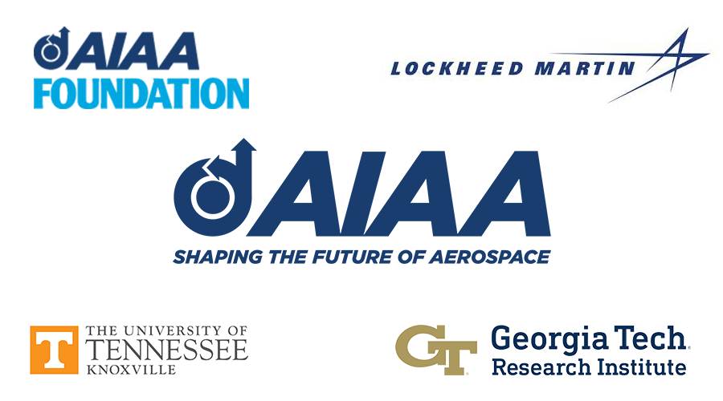
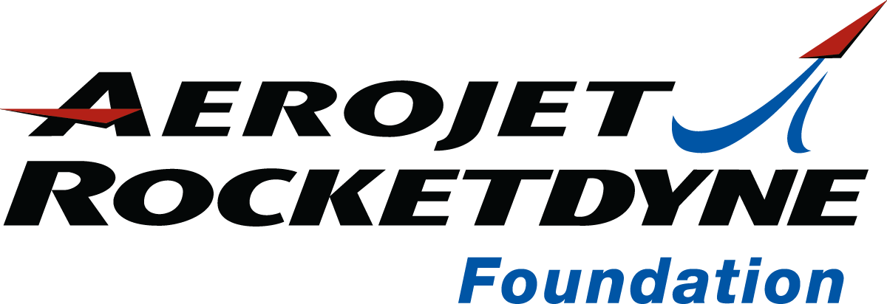
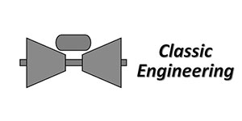

Welcome to the 74th Annual
AIAA Southeastern Regional Student Conference
Knoxville, Tennessee
March 27th - 28th, 2023

Hosted by the University of Tennessee
with support from University of Tennessee Space Institute and Tennessee Tech University
Conference Schedule
| Sunday, March 26th | |
|---|---|
| 4:00 pm - 10:00 pm | Check in |
| Monday, March 27th | |
|---|---|
| 7:45 am | Opening Announcements |
| 8:00 am - 8:30 am | Keynote |
| 8:45 am - 12:00 pm | Technical sessions |
| 12:00 pm - 2:00 pm | Luncheon & Speaker |
| 2:00 pm - 5:15 pm | Technical sessions |
| 6:00 pm - 8:00 pm | Monday Night Social |
| Tuesday, March 28th | |
|---|---|
| 8:30 am - 11:15 am | Technical sessions |
| 12:15 pm - 4:45 pm | Tours: Cirrus Aerospace, Oak Ridge National Laboratory, or MDF & Beehive Facilities |
| 5:30 pm - 6:30 pm | Social Hour |
| 6:30 pm - 9:00 pm | Awards Banquet |
| Wednesday, March 29th | |
|---|---|
| 8:00 am - 10:00 am | Check out |
Speaker Profiles
Katherine P. Van Hooser
Chief Engineer, Marshall Space Flight Center
Ms. Katherine Van Hooser has served as the Chief Engineer at Marshall Space Flight Center since she was appointed to the Senior Executive Service in April 2016. She is responsible for technical leadership in planning, directing, and executing research, technology, design, development, production, integration, and sustaining engineering for the Space Launch System (SLS) Program, the Human Exploration Development and Operations Office, and the Science and Technology Office.
From 1991 to 2005, Van Hooser served as engineer, Team Lead, and then Branch Chief in Turbomachinery, responsible for managing the design, development, testing, evaluation, certification, production, and flight of liquid rocket engine turbomachinery for use in space vehicle applications. She became Space Shuttle Main Engine (SSME) Assistant Chief Engineer in 2005 and SSME Chief Engineer in 2008, leading a multi-disciplined group of engineers and other professional and support personnel through the last 21 Space Shuttle flights.
In 2011, Van Hooser became the first Chief Engineer for the Liquid Engines Element of the SLS Program, responsible for the engineering activities, technical excellence, and success of the design and adaptation of the J-2X and RS-25 engines, and served in 2012 on a detail assignment as Deputy Chief Engineer for the SLS Program.
Van Hooser served as Acting Associate Director of Engineering for Technical Management from 2013 to 2015. In this 15-month assignment, she assisted in the leadership of an organization of approximately 2,600 civil servants and contractors and served as a member of the overall strategic planning staff. She also served as the coordinator for all engineering activities supporting the Agency's Technical Capability Assessment Team.
In 2015, Van Hooser became Deputy Director of the Materials & Processes Laboratory, assisting in the oversight and management of an annual budget of approximately $54M and a combined workforce of more than 250 civil servants and contractors engaged in science, technology, and engineering for materials, processes, and products for use in space vehicles and related applications.
Van Hooser has received the NASA Distinguished Service Medal, NASA Exceptional Engineering Achievement Medal, a Silver Snoopy Award, and NASA's Software of the Year Award. She has authored multiple technical papers and was inducted into the University of Tennessee Mechanical, Aerospace, and Biomedical Engineering Hall of Fame in 2018.
Brian Ade
Fuel Design Manager, Ultra Safe Nuclear Corporation
Brian Ade is the Fuel Design Manager at Ultra Safe Nuclear Corporation (USNC), where he leverages his expertise and experience to help integrate the reactor design and fuel manufacturing teams. Part of these responsibilities include development of USNC's manufacturing process for nuclear thermal propulsions fuel with combines coated particle fuel and additive manufacturing processes. Before joining USNC, Brian was a senior R&D staff researcher within the Nuclear Energy and Fuel Cycle Division of Oak Ridge National Laboratory specializing in reactor physics analyses, reactor design, and nuclear nonproliferation R&D. While at ORNL, Brian led the design thrust for the Transformational Challenge Reactor (TCR) program, which utilized additive manufacturing (3D printing) for critical core components with the goal to provide a revolutionary platform to dramatically reduce the deployment costs and timelines of nuclear energy systems.
Ralph D. Heath
Former Head, Lockheed Martin Aeronautics Company
Ralph D. Heath is the former head of Lockheed Martin Aeronautics Company with over $20 billion in annual revenue and 25,000 employees at nine operating sites. Products include the F-16, F-22 and F-35 fighters, the C-130 and C-5 transports, and both manned and unmanned reconnaissance aircraft. He currently serves on the board of directors of Textron Corporation.
During his 40 plus year career, Ralph held a wide range of positions in design, development, production and sustainment. He was a leader in international business, personally engaging in more than 30 countries around the world.
Mr. Heath is an AIAA Fellow and was recipient of the 2005 Reed Aeronautics and 2012 Hap Arnold AIAA Awards. He is an emeritus member of the board of the Smithsonian National Air and Space Museum. An Army veteran, Mr. Heath served nearly four years on active duty. He holds BSEE and MBA degrees from the University of Tennessee, and an FAA commercial pilot's license.
Location Information

Knoxville is located in eastern Tennessee, with a population of approximately 190,000 residents. It is the third-largest city in the state and is known for its vibrant downtown area, natural beauty, and rich history. The city is home to several universities, including the University of Tennessee, which is a leading institution in the field of aerospace engineering. Knoxville is also a hub for several industries, including healthcare, manufacturing, and technology.
The aerospace engineering industry has a strong presence in Knoxville, with several companies and organizations conducting research and development in the field. The Knoxville-Oak Ridge Innovation Valley is a regional economic development partnership that focuses on recruiting and retaining high-tech companies in the area, including those in the aerospace industry. The region is home to several major aerospace companies, including Boeing, Lockheed Martin, and Northrop Grumman.
Knoxville is also home to several research centers and institutes that are focused on aerospace engineering, including the University of Tennessee Space Institute and the Oak Ridge National Laboratory. These institutions conduct cutting-edge research in areas such as propulsion systems, materials science, and space policy. With its strong academic programs, research initiatives, and partnerships with industry and government agencies, Knoxville is a valuable resource for the state of Tennessee and a leader in the field of aerospace engineering.
Conference Hotel Address
Hilton Knoxville
501 W Church Ave
Knoxville, TN 37902
865-523-2300
Attractions
Great Smoky Mountains National Park
Market Square
Knoxville Museum of Art
World's Fair Park
Tennessee Theatre
Knoxville Zoo
Ijams Nature Center
East Tennessee History Center
Women's Basketball Hall of Fame
McClung Museum of Natural History and Culture
Sponsors & Partners
| National Sponsors | |
|---|---|
| Platinum Plus | |
|---|---|
| Gold | |
|---|---|
|
Jacobs Space Exploration Group |
|
|
Airbus Careers |
|
Gene Goldman |
|
| Silver | |
|---|---|
|  | |
|
Moog Executive Summary Life at Moog: Welcome to Moog |
|
|  | |
|
Overview and Capabilities |
|
|
Dynetics Careers About Dynetics Dynetics Summer Intern Video |
|
| Bronze | |
|---|---|
AIAA Greater Huntsville Professional Section |
|
Alan and Nikki Lowery |
|
Host Schools
The University of Tennessee, located in Knoxville, is a public research university with a rich history dating back to 1794. It is the flagship institution of the University of Tennessee System, which includes multiple campuses and institutes throughout the state. With over 28,000 undergraduate and 6,500 graduate students, UT Knoxville is one of the largest universities in Tennessee and the southeastern region of the United States.
UT Knoxville offers over 360 undergraduate and graduate degree programs across 11 colleges, including the College of Engineering, which is one of the largest colleges on campus. The College of Engineering offers 12 undergraduate degree programs and 16 masters degree programs, with a total enrollment of approximately 6,500 students. The college is known for its strong programs in aerospace engineering, biomedical engineering, and energy and sustainability engineering.
The aerospace engineering program at UT Knoxville has a long history of excellence, dating back to the 1950s when the university began offering courses in aeronautical engineering. In 2011, the university established the Aerospace and Defense MBA program, which is designed to prepare students for leadership roles in the aerospace and defense industries. UT Knoxville is also home to the Space Institute, which conducts research in areas such as space propulsion, materials science, and space policy.
In recent years, UT Knoxville has made significant contributions to the field of aerospace engineering. In 2018, researchers at the university developed a new method for designing and testing rocket engines, which could lead to more efficient and reliable space travel. The university is also involved in several ongoing projects with NASA, including the development of new materials for spacecraft and the study of solar wind interactions with Earth's magnetic field. With its strong academic programs and research initiatives, UT Knoxville is a leading institution in the field of aerospace engineering and a valuable resource for the state of Tennessee and beyond.
The University of Tennessee Space Institute (UTSI) is a research and education institution located in Tullahoma, Tennessee. It is a branch of the University of Tennessee System and is dedicated to the advancement of science and technology in space-related fields. UTSI offers graduate degree programs in aerospace engineering, mechanical engineering, and computer science, among others. The institute is also home to several research centers, including the Center for Laser Applications and the Center for Autonomous Systems and Sensors.
UTSI has a long history of excellence in aerospace engineering, with a focus on propulsion systems, materials science, and space policy. In 2015, UTSI received a $5 million grant from the National Science Foundation to establish the Center for Autonomous Systems and Sensors, which conducts research in the areas of unmanned aerial vehicles (UAVs), robotics, and sensors. The institute also collaborates with NASA on several research projects, including the development of new materials for spacecraft and the study of solar wind interactions with Earth's magnetic field.
In addition to its academic and research programs, UTSI is also involved in outreach activities aimed at promoting science, technology, engineering, and mathematics (STEM) education. The institute hosts summer camps and workshops for students and teachers, as well as community events such as rocket launches and science fairs. With its strong academic programs, cutting-edge research initiatives, and commitment to STEM education, the University of Tennessee Space Institute is a valuable resource for the state of Tennessee and a leader in the field of aerospace engineering.
Tennessee Tech University is a public university located in Cookeville, Tennessee. It is part of the Tennessee Board of Regents System and offers over 40 undergraduate and 20 graduate degree programs across five colleges. With a student population of over 10,000, Tennessee Tech is one of the largest universities in the region. The university is known for its strong programs in engineering, business, and education.
The College of Engineering at Tennessee Tech is one of the largest colleges on campus and offers degree programs in a variety of engineering fields, including mechanical engineering, electrical engineering, and civil engineering. The college is also home to the Center for Manufacturing Research, which conducts research in advanced manufacturing techniques and provides technical assistance to industry partners. Tennessee Tech has a long history of excellence in engineering, with alumni working in industries such as aerospace, automotive, and energy.
Tennessee Tech has also made significant contributions to the field of aerospace engineering. In 2018, the university partnered with NASA's Marshall Space Flight Center to develop a new technology for creating lightweight, high-strength materials for spacecraft. The university is also involved in the design and construction of CubeSats, small satellites that can be used for a variety of scientific purposes. With its strong academic programs, research initiatives, and partnerships with industry and government agencies, Tennessee Tech University is a valuable resource for the state of Tennessee and a leader in the field of engineering and technology.
Conference Events
Monday Night Event
Monday, 6:00 pm - 8:00 pm
Location: Sunsphere
810 Clinch Avenue
Come engage with professionals and students from other universities as you compete for prizes and test your knowledge
across a variety of topics including aerospace, sports, geography, and more. We will have chips, dip, and refreshments
for everyone to enjoy while networking and having fun. This event will take place on Monday night from 6:00 PM until
8:00 PM.
Cirrus Aircraft Tour
The Knoxville location of Cirrus Aircraft is their central hub for customer experiences including new aircraft delivery and Vision Jet Type Rating. Attendees will get to see the inner workings behind providing customers with personal jets.
MDF and Beehive Tour
The Manufacturing Demonstration Facility (MDF) is an ORNL facility that conducts R&D for the Department of Energy. Their main focus is developing manufacturing processes that are energy and material efficient, highly productive, and cost effective.
Beehive Industries' additive manufacturing facility in Knoxville supports their work in the defense and aerospace industries. Students will get to see first hand what it might be like to work in manufacturing in the aerospace field.
Oak Ridge National Laboratory Tour
This tour will be on ORNL's main campus and will take the attendees to two different facilities. One facility is the Spallation Neutron Source where neutrons are separated from mercury and used for a broad range of research applications. The other facility houses the Summit and Frontier supercomputers which are two of the fastest supercomputers in the world.
Conference Proceedings
Technical Paper - Undergraduate
Technical Paper - Masters
| Title | Presenters | University |
|---|---|---|
| A Computational Diffusion Model to Predict Accelerated Corrosion Propagation | Daniel Hampson | University of Georgia |
| Aeroacoustic Structures within a Supersonic Cavity | John Parrish; Tushar Srivastava | North Carolina State University |
| Clauser Plot Method of Analysis on Molecular Tagging Velocimetry Data | Oriana Palumbo | University of Tennessee Space Institute |
| Indentation Loading of Prismatic Cell Lithium-ion Battery Modules | Sida Xu | Embry-Riddle University - Daytona Beach, FL |
| Investigation of Single Luminophore, Polymer-Ceramic Pressure Sensitive Paint for High Speed Wind Tunnel Testing | Jamison Murphree | University of Tennessee Space Institute |
| The Future of Aerospace Design and Manufacturing through Self-Assembly and 4D Printing | Sid Amonchomchupong | University of Alabama - Huntsville |
Technical Paper - Team
| Title | Presenters | University |
|---|---|---|
| Acoustic Dampening of Propellers | Bartlet Pollock; Nate Wylie; CJ Jordan | Mississippi State University |
| BiPROP Rocket Competition Team | Emma Brackett; Jacob Smith; Nathaniel Cerletty | Florida Institute of Technology |
| Fiber Optic Force Sensing in Wind Tunnels | Sephia Hendrix; Heather Everhart; Sephia Hendrix | Mississippi State University |
| Lunar Descent Vehicle Simulation | Victoria Rutledge; Christian Mounce; Chase Kincaid | Mississippi State University |
| Multi-Disciplinary Applications and Practicality of Solar Sails | Jaxon Strank; Nathan Tardy; Victor Zaharia | Florida Institute of Technology |
| Numerical Modeling for Development of a Student Developed Self-Pressurizing Liquid Bipropellant Rocket Engine | Jack Slayden; Elias Perez; Austin Morse | University of Alabama - Huntsville |
| Payload Design of RHOK-SAT, a 1U CubeSat to Characterize Perovskites in LEO | Olivia Kaufmann; Benjamin Wilson; Jessica Hamer | Rhodes College |
| Remote Sensing of the Mississippi River Watershed Region using 3 CubeSats | Jack Parr; Matthew Jiles | Mississippi State University |
| Software Design of RHOK-SAT, a 1U CubeSat to Characterize Perovskites in LEO | Anas Matar; Marouf Mohammad Paul; Zheng Yu Wong | Rhodes College |
| Team Flying Tigers Design, Build, Fly Competition | James Liu; John Hamer; Ross Jenner | University of Memphis |
| Wildfire Identification Via CMOS Sensor Fitted High-Altitude Long Endurance (HALE) System | Michael Smith; Sam Cupples; Kyle Lindsey | Mississippi State University |
Freshman/Sophomore Open Topic
| Title | Presenters | University |
|---|---|---|
| Analysis of Cost Reduction of Space Travel with the Scramjet | Mason Roddy | University of Tennessee |
| History of Spacecraft Fuel Sloshing | Jesus Delgado | Florida Institute of Technology |
| Ocean World Exploration Rover | Beck Kerridge; Colin Zelasko | Florida Institute of Technology |
| Review of Autonomous Technologies for a Crewed Exploration of the Lunar South Pole | James Cross | University of Florida |
| The Future of Deep Space Flight using Ion Propulsion | Whitney Reinkoester | Florida Institute of Technology |
Community Outreach
| Title | Presenters | University |
|---|---|---|
| Delta Tech Ops Tour | Claire Keller; Ethan Traub | Georgia Institute of Technology |
| Florida Tech Outreach | Matthew House; Sidney Causey | Florida Institute of Technology |
| University of Tennessee AIAA Professional Development Effort | Chadwicke Bolding; Sreya Kumpatla | University of Tennessee |
Exhibition
| Title | Presenters | University |
|---|---|---|
| Utilizing a Water Table for the Analysis of Compressible, Supersonic Flow | Jeffrey Whitenack | North Carolina State University |